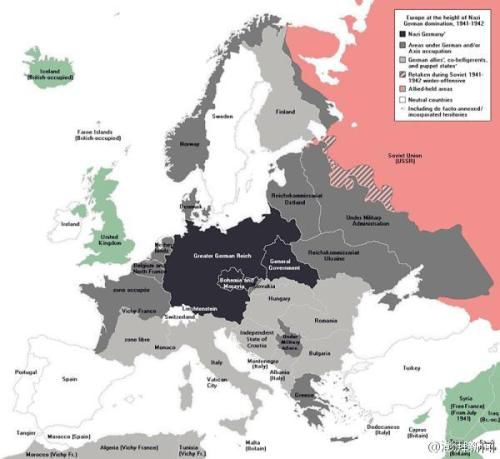
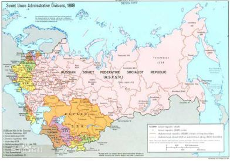
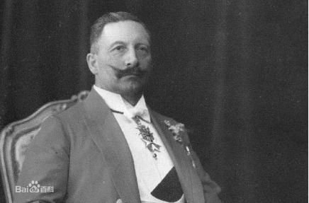
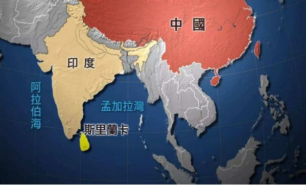

收录于合集
简
姜鹏
哈尔滨工程大学形势与政策研究中心副教授、外交学院国际关系研究所博士后
注：本文经作者授权并国政学人编辑首发，转载需联系授权。篇幅有限，参考文献请见原文。
摘 要
通过对地缘政治学与战略心理学进行交叉研究发现，面对海陆复合型崛起大国，海权霸主更多表现出“知觉警觉”的特征，而其周边陆权邻国则更多表现出“知觉防御”的特征。前者倾向于根据权力的结构性对崛起大国采取积极制衡，而后者倾向于根据权力的关系性对崛起大国采取融合威胁的合作或推责。因此，只有当海陆复合型崛起大国对周边陆权邻国明显构成安全威胁时，才会促使它们同海权霸主结成制衡同盟。“腓力陷阱”可以被视为海陆复合型崛起大国因未能认清和利用海权霸主的“知觉警觉”与陆权国的“知觉防御”之间的战略分歧所引发的后果。更确切的说，失败的崛起大国不仅没有理解“知觉防御”的大陆原理本应是其分化战略中的有效支撑，反而因其周边外交的战略冒进帮助了海权霸主建立反制性同盟。对于已获得陆权支配地位的大国来讲，避免追求绝对陆上霸权的战略冒进，转而追求在“不平衡的多边均势”中保持相对优势，则会在“知觉防御”的大陆原理作用下促成周边国家争相推责，从而使海权霸主因无法在陆上找到足够有效的战略盟友而难以推行战略遏制。
关键词
大国战略 强国外交 **** “腓力陷阱” 中美关系 印太战略
作者：姜 鹏
一、引 言
“腓力陷阱”既是一种在国际关系史中长期反复发生的地缘政治现象，同时也是本文进行理论 建构 的 兴趣 起点。 纵观近400多年来国际体系中的权力转移可以发现，自西班牙帝国腓力二世已降，已获得陆权优势的海陆复合型崛起大国常常会遭到海权霸主的战略遏制，并陷入一个可诱发战略透支的 二元悖论， 即要想最终击败海权霸主，就需要扩充海军，削减陆军；但同时只要仍然存在着陆上强邻的外在压力，就有扩充陆军的内生冲动。 这种战略迷思使其最终陷入海陆两线的长期对抗并在消耗战中面临 “两头落空”的战略透支。
“腓力陷阱”生成的背后存在着“知觉警觉”的海洋原理与“知觉防御”的大陆原理两套平行的政治逻辑。 地缘战略心理学认为，国家对地缘安全环境的感知程度是随着其意识到危险时自认为有多大应对能力的信心而变化的。当国家有能力应对危险的时候，更容易激发高度恐惧的心理变化；而当一个国家缺乏应对威胁有效措施的时候，更容易引发低度恐惧的心理反应。欧文·詹尼斯（Irving Janis）和霍华德·莱文塔尔（Howard Leventhal）等人认为，如果一个国家没有办法避免刺激因素带来的冲击，其面对刺激因素时的知觉阈值就会提高（即知觉防御），并表现出较强的安全钝性；但如果一个国家有能力避免冲击或改变不利局面的话，它的知觉阈值就会降低（即知觉警觉），并表现出对安全的过度敏感。基于上述研究成果的启发， 本文将心理学的 “威胁感知理论”同地缘政治学的“地理磨损原理”进行交叉研究后发现，由于陆权国在数量上要远多于海权国且缺乏缓冲空间，它们之间更容易因集体行动逻辑的困境 而倾向于融合威胁或推卸责任的知觉防御。相比之下，巨大的水体阻隔为海权国带来了更多的安全剩余，进而更倾向于积极制衡的知觉警觉。
**从本质上讲， “腓力陷阱”反映的是海陆复合型崛起大国如何在“知觉警觉”的海洋原理作用下丧失利用“知觉防御”的大陆原理的失败教训。**其过程表现为：一俟海陆复合型崛起大国取得陆权优势，就会激活海权霸主基于“知觉警觉”的海洋原理的无差别制衡。但是，其周边陆权邻国往往因“知觉防御”的大陆原理而更倾向于融合威胁的合作或规避风险的推责。因此，从理论上讲，海陆两线遏制战略可能因海权霸主无法找到足够的陆上同盟者而难以实现。 导致海陆复合型崛起大国最终滑入 “腓力陷阱”的根本原因在于，这种“堂吉诃德式”的战略迷思使其无法认识到试图征服周边 ****陆权邻国 ——以此作为战胜海权霸主的本垒与博弈筹码——不仅会促使它们因无法继续卸责而同海权霸主结盟，同时也会使自身因陷入海陆两线压力而面临战略透支。
如果说对 “修昔底德陷阱”的研究意在阐明崛起国同霸权国在权力转移进程中爆发冲突的可能性，那么对“腓力陷阱”的研究则意在阐释权力转移进程中崛起国可能以怎样的方式避免战略透支。纵观近代国际体系的历史进程可以发现，失败的崛起国在国际格局转型期常常会上演古希腊悲剧中英雄的命运，即在不知不觉而又半推半就中一再踏进命运的“腓力陷阱”。作为21世纪欧亚大陆上的崛起大国，中国在战略军事层面尤其应当以史为鉴，更加审慎地应对中美权力转移进程， 并从地缘战略心理学角度重新理解和诠释 “大国是关键，周边是首要”的深刻意涵。而对“腓力陷阱”这一国际政治现象的理论研究，不仅能够丰富和完善中国特色大国战略理论，同时也能够为中国在后续的崛起进程中避免战略透支提供科学的对策建议。 _ （本文经国政学人微信公众平台编辑首发）_
二、“腓力陷阱”的理论阐释
“腓力陷阱”不仅是一个简单的学术概念，而是一个逻辑自洽的微观理论。以下将遵循从现象到概念，从概念到理论的一般性认知规律对“腓力陷阱”进行理论阐释，从腓力二世大战略所蕴含的特殊性中抽象出具有普遍指导意义的政治规律与政治逻辑。 该理论框架最具创新性的部分在于通过区分地缘类属身份，进而指出 “知觉警觉”的海洋原理与“知觉防御”的大陆原理在地缘战略心理中的偏好差异，并在此基础上提出制衡性同盟并非 由 权力 的 结构性而自发构建的新认识。 由于海权霸主更倾向于主动制衡，而陆权邻国则倾向于推卸责任与融合威胁，因此，如果海陆复合型崛起大国不主动威胁或进攻周边邻国，倾向于 “离岸平衡”的海权霸主就难以寻找到愿意与其合作的陆权大国作为其“离岸平衡”的战略抓手
（一）从现象到概念：历史中的 “腓力陷阱”
自1556年查理五世宣布退位后，腓力二世继承了除德意志地区以外的所有领地。作为西班牙兼葡萄牙国王，腓力治下的地区囊括了西班牙、葡萄牙、尼德兰、西西里与那不勒斯、弗朗什孔泰、米兰，以及全部西属美洲和非洲殖民地。加之其本人雄心勃勃地试图在欧洲重建天主教大帝国，因此，腓力二世时期的西班牙帝国既有问鼎欧洲霸主的物质实力，也怀有强烈的战略意愿。但这一时期的西班牙帝国却因陷入海陆两线的长期作战而出现不可逆转的战略透支。
腓力二世：（1527年5月21日—1598年9月13日），又译费利佩、菲利普、菲利波。今天的菲律宾就是以腓力二世国王的名字命名的属地。腓力治下的西班牙帝国是人类历史上第一个“日不落帝国”，以至于腓力二世和他的许多大臣坚定的认为，上帝本身就是西班牙人。
极其有利的境况和发展情势如何使西班牙帝国最终选择了战略冒险？在腓力二世时期，哈布斯堡家族西班牙分支问鼎欧洲霸权最大的掣肘来自于海权国英荷两国与陆权邻国法国。其中尤以英国对西属尼德兰叛乱的支持，以及由英国海盗长期袭击西班牙远洋商船队的威胁最为明显。因为源源不断流向西班牙海外属地的财富是支撑腓力二世同上述竞争者进行战略博弈的重要筹码。英国对西班牙的海上劫掠使得腓力二世除了大力制服英国外别无选择。到了1588年，此种战略认识已经升级为旨在一举歼灭英国海军、登陆并占领英国的大规模渡海远征。
“无敌舰队”1588年远征英国失败后，腓力二世面临着如下困境：为了降伏英国，就需要重建海军，这就需要减少陆军。但只要身边仍然存在着陆上强邻法国，就需要增加陆军。更加不幸的是，在海权国英国与荷兰坚定地对其进行离岸制衡的前提下，这种希望通过延展陆上本垒并实现“以陆补海”的战略，注定了西班牙帝国将陷入一个海陆两线作战的“腓力陷阱”。为了获取绝对的欧陆霸权——只有这样才能放心地增加海军，同时减少陆军对有限战略资源的分配——腓力二世在同海权国英国与荷兰冲突仍然存在的前提下，积极卷入法国的“胡格诺宗教战争”，法国遂同英荷两国结成了共同对抗西班牙的准同盟关系。1595年，腓力二世的陆军被法国国王亨利四世击败。1598年腓力二世去世，标志着哈布斯堡家族在欧洲战略优势的拐点。此后，西班牙在力图重振西班牙帝国的腓力四世带领下进行了最后的努力尝试，但“三十年战争”使其再度因海陆两线作战而出现战略透支，以至于1659年签署《比利牛斯和约》后彻底丧失了大国身份。
每一种特殊现象的背后都存在着一般性规律的支配，科学研究的本质就是将具有同样特征的现象进行归类并将其概念化。客观规律及其表象是先于主观认知与概念而存在的。同理，本文所提出的“腓力陷阱”也并非自腓力二世以降才出现的，也不会因为西班牙帝国的终结而消失。作为一种对反复发生的政治现象的理性认识，引入“腓力陷阱”概念的意义在于能够更好地激发人们对于同类地缘政治问题产生出相关联想与映像。
（二） “腓力陷阱”的前提假定
本文构建理论的前提假定主要有四点，故只有在满足以下四点假定的前提下， “腓力陷阱”才具备生成的环境与条件。
**第一， “腓力陷阱”的研究对象是海陆复合型崛起大国，且取得了陆上的支配性地位。**这就将英国、1945年后的美日等海权国家以及1940年以前的纳粹德国、1895～1905年的日本帝国等“两极陆权”之一的国家排除在研究对象之外。
第二，这类海陆复合型崛起大国周边至少存在一个可能对其形成潜在制衡的陆权邻国。 这就将19世纪末在美洲地区攫取了陆权优势的美国排除在外。
**第三，地缘战略心理学认为， “安全”同“安全感”是两个不同的概念。前者是客观上免于受到物理伤害的真实状态，后者则是主观上没有感知到威胁发生可能性的心理体验。**虽然物质实力、地缘的毗邻性、进攻能力与侵略意图对安全的影响程度依次递增，但对安全感的影响更取决于地缘类属身份的主观认知。
第四，根据地理磨损原理、集体行动逻辑等综合因素，本文假定拥有巨大水体阻隔的海权国更具 “知觉警觉”特征，而缺乏战略缓冲与安全剩余的陆权国则更多地表现出“知觉防御”的 特征 。
（三） “腓力陷阱”生成的政治逻辑
地缘战略心理学对于研究“腓力陷阱”背后的政治逻辑提供了一个独特的视角。 通过对 “知觉警觉”的海洋原理与“知觉防御”的大陆原理进行对比研究后发现：面对迅速崛起的海陆复合型地缘政治大国，海权霸主倾向于根据权力的结构性而对其采取积极制衡，陆权邻国则倾向于根据权力的关系性而采取融合威胁的合作或规避风险的推责。因此，只有当海陆复合型崛起大国对陆权邻国构成明显安全威胁时——通常表现为存在不可调和的领土争端或主动发起军事进攻——才会促使它们选择同海权霸主结成制衡同盟（参见表1）。同时，从地理磨损原理角度讲，海洋的阻隔效应使海权霸主拥有更多的安全剩余，这是其能够采取更加独立结盟政策的根本原因。因此，海陆复合型崛起大国滑入“腓力陷阱”的内在逻辑可以被视为其没有认清和利用海权霸主“知觉警觉”与陆权国“知觉防御”之间的战略分歧。更确切的说，海陆复合型崛起大国的失败在于其不仅没有理解“知觉防御”的大陆原理本应是其大战略中的有效支撑，反而因其对周边陆权大国的进攻，帮助了海权霸主建立反制性同盟。
表1 海陆复合型崛起大国陷入“腓力陷阱”的内在因素
地缘类属
|
安全剩余
|
警觉阈值
|
战略偏好
|
反转条件
海权国
|
大
|
知觉警觉、过度敏感（高）
|
主动制衡、构建遏制同盟
|
出现实力或争霸意图更强的推责对象
陆权国
|
小
|
知觉防御、安全钝性（低）
|
推卸责任、融合威胁
|
领土纷争、遭受进攻
相对于海权霸主来讲，欧亚大陆整体上可以被抽象成“世界最大、人口最多、最富饶的世界岛”。一俟欧亚大陆两端出现可能称霸的海陆复合型大国，就可能凭借对广袤富饶的陆地资源的整合，最终以“海洋原理”赢得同海权霸主之间的消耗战——如同美国独立战争期间欧洲大陆形成的“武装中立”同盟，这一昙花一现的陆权同盟构筑起了近代史上“欧洲大陆岛”对“英伦三岛”的海权优势。
因此，对于海权 霸主 来讲，为了避免自身海权优势因陆上支配性强国的出现而流失，就需要在海陆复合型崛起国最终实现陆上霸权之前，积极利用相邻大国间的矛盾组建离岸制衡同盟。因此较安全的战略就是与那些暂 不构成威胁 的陆权次强国进行结盟，以避免它们被陆权支配性大国所控制。 正如英国首相温斯顿·丘吉尔所阐释的：“英国近400年来的外交政策都是反对在欧洲大陆出现一个强大的、有野心的和居于支配地位的陆上霸权。与这样的陆上霸权联合并接受其庇佑极具诱惑力，但我们总是选择另一条看似更加艰辛的道路，与那些欧陆次强国结成同盟，击败任何破坏欧陆均衡的支配性霸权。”这构成了海权霸主积极承担“离岸平衡手”角色的内在动机。事实上，20世纪70年代初美国同中国实现战略接触，不仅体现出美国在中美苏大三角中同陆上次强国结盟的战略偏好，也体现出苏联因对其周边陆权强邻中国咄咄逼人的进攻态势，而使后者同海权霸主美国结成海陆两线的准遏制同盟。
对于海陆复合型崛起大国的陆权邻国来讲，由于彼此相邻且没有海洋的有效阻隔，参与海权霸主的制衡性同盟可能是一种风险与成本极高的战略选择。同时，海权霸主单一的地缘战略属性导致其自身陆战力量薄弱，这使得同海权霸主结盟对抗陆上霸权难以成为陆权邻国的理性选项。 “知觉防御”的大陆原理与大陆国家集体行动逻辑的困境均表明，权力均衡并不会像肯尼斯·华尔兹（Kenneth N.Waltz）所预言的那样会反复自动生成。面对海陆复合型大国的强势崛起，其周边陆权邻国并不愿意同海权霸主结成同盟，以至于沦为首当其冲的战略前哨，而是更愿意选择融合威胁的合作或规避威胁的推责战略。这构成了体系回应崛起大国的另一条逻脉络。
（四） “腓力陷阱”理论的基本假说
通过对“知觉警觉”的海洋原理与“知觉防御”的大陆原理两种地缘战略逻辑的区分可以发现， 海陆复合型崛起大国陷入 “腓力陷阱”的原因并非结构现实主义理论所认为的在无政府条件下自发形成的权力均衡，而 **是其两栖地缘战略属性与生俱来的矛盾，以及出于 “大陆岛战胜离岸岛”的战略迷思而在周边外交中采取战略冒进，从而将陆权邻国推入海权霸主制衡性同盟的怀抱。**在满足核心假定与逻辑框架的前提下，以下提出关于“腓力陷阱”理论依次递进的5项基本假说。
**基本假说 1：**学界通常认为，为了确保欧亚大陆两端的权力均衡，海权霸主会同陆权次强国结成制衡同盟。但本文认为，由于“知觉警觉”的海洋原理同“知觉防御”的大陆原理之间的偏好差异，海权霸主依据权力的结构性而倾向于对陆权霸主进行无差别制衡。但是，如果海权霸主无法向同盟提供足够吸引力的陆权力量，那么陆上次强国并不热衷于同其结成制衡性同盟并扮演首当其冲的战略屏障，而更倾向于融合威胁的合作战略或规避风险的卸责战略。
**基本假说 2：**海陆复合型崛起大国滑入“腓力陷阱”的根本原因并非海权霸主同盟战略的成功，而是其对周边大国推行强势外交战略的失败。如果海陆复合型崛起大国试图通过战争来延展陆权本垒，以实现“大陆岛”对“离岸岛”的战略制胜，那么这种战略不仅无法得以实现，反而会迫使周边倾向于融合威胁或推责的陆权邻国因恐惧而加入海权霸主的遏制同盟。
基本假说 3：“大陆原理”与“海洋原理”是两种平行且不相交的战略。如果双方都希望以己之长克敌之短，则目标永远也无法实现。对于海权霸主来讲，要想迫使陆权国屈服就要利用“大陆原理”并与其陆权邻国结盟；对于陆权国来讲，则需要放弃通过延展大陆本垒来战胜海权霸主的战略迷思。这一战略迷思是崛起大国滑入“腓力陷阱”的根本原因。
**基本假说 4：**海陆复合型崛起大国也要放弃另一种战略迷思，即利用周边陆权邻国的善意中立，凭借自身的陆权资源逐步延伸海洋本垒，最终以自身的“海洋原理”取得对海权霸主的胜利。在战略资源有限的前提下，如果试图依靠自身的“大陆原理”向“海洋原理”转化，则不仅会因其专注发展海权而遭致海权霸主的遏制升级，还意味着其陆权优势将被周边邻国取而代之。
**基本假说 5：**由于海权霸主倾向于依据权力的结构性而对陆上支配大国实行无差别制衡，已获得陆权优势的大国无法获得与海权国结盟的最优解。而通过军事征服大陆邻国，再以整个大陆的力量进军海洋的战略迷思则将导致其陷入两线对抗的“腓力陷阱”。 所以，如果已获得陆权优势的海陆复合型崛起大国放弃对绝对陆权优势，转而追求在 “不平衡的多边均势”中的相对优势，同时积极向周边国家提供安全公共产品，则会在“知觉防御”的大陆原理作用下成为周边国家争相卸责的战略伙伴，进而化解“腓力陷阱”的战略迷思。 _ （本文经国政学人微信公众平台编辑首发）_
三、“腓力陷阱”的案例验证：1525～1991
在权力转移进程中，取得陆权优势后的崛起国常常会面临滑入“腓力陷阱”的地缘战略风险，并在由此引发的两线对抗中出现战略透支。“腓力陷阱”理论分析框架能够较好地诠释海陆复合型大国崛起进程中具有共性的战略迷思。因为这些决策者面临着相似的战略态势，处于相似的压力环境，追求相似的战略目标，选择了相似的战略手段，并最终滑向了相似的“腓力陷阱”。
以下试图对近 400多年来出现的取得陆权优势的海陆复合型崛起国样本进行无差别分析。按照时间排序包含路易十四时期的 法国、拿破仑时期的法兰西第一帝国、拿破仑三世时期的法国法兰西第二帝国、俾斯麦时期的 德意志第二帝国、 19世纪末的美国、1905年后的日本帝国、1939年后的纳粹德国，以及两极格局时期的苏联。这其中既包含滑入“腓力陷阱”的证实案例，也包含摆脱“腓力陷阱”的证伪案例。为了确保验证的科学性，本文将不仅关注能够支撑研究结论的证实案例，更关注那些证伪案例。只有看似并不符合本研究的证伪案例仍与这一理论的内在逻辑并行不悖，才能够证明该理论有效性。
（一）对证实案例的考察
“三十年战争”后，法国成为威斯特伐利亚体系最大的受益者。1661年马扎然去世后，路易十四开始亲政，并先后通过1667年至1668年与西班牙争夺荷兰的遗产归权战争和1672年的法荷战争取得了无可匹敌的欧陆支配地位。在取得欧洲陆权优势后，路易十四同当时的海权霸主英国之间的战略矛盾日益紧张。当法国舰队在1692年拉荷格海战败于英荷联合舰队后——这一败北重演了腓力二世“无敌舰队”在英吉利海峡的惨败——他同样将目光转移到欧洲大陆，并试图通过对哈布斯堡家族两大分支的胜利，重新积聚战胜海权霸主的能量。但这一战略选择最终使路易十四在西班牙王位继承战争中陷入海陆两线对抗的“腓力陷阱”。面对路易十四对哈布斯堡家族西班牙分支及其海外领地的觊觎，以哈布斯堡家族奥地利分支为首的主要欧陆大国纷纷与英国结成对抗路易十四的同盟。西班牙王位继承战争使法国国库消耗殆尽，最终导致其崛起进程因战略透支而被迫中断。但是，完全消灭法国——这意味着哈布斯堡家族将成为欧陆霸权——也不符合海权霸主英国的战略利益，毕竟英国对路易十四的战争目的不在于此。因此，一旦法国出现衰落趋向，英国便马上抛开陆权盟友单独与其媾和，以确保法国仍是欧洲均势天平上的重要砝码。
路易十四，全名路易·迪厄多内·波旁（Louis-Dieudonne），自号太阳王，1680年更接受巴黎市政会献上的“大帝”（le Grand、路易大帝）尊号，是波旁王朝的法国国王和纳瓦拉国王。在位长达72年3月18天，是在位时间最长的君主之一，也是有确切记录在欧洲历史中在位最久的独立主权君主。
拿破仑时期的法兰西第一帝国在崛起进程中也面临着当时的海权霸主英国的积极制衡。为了战胜这个数次组建反法同盟的“离岸平衡手”，拿破仑曾三次试图发起对英国的渡海远征。但是，由于在1798年的阿布基尔海战、1805年的特拉法加海战，以及1807年纳尔逊摧毁哥本哈根的丹麦舰队等一系列海战中失败，最终使拿破仑将目光转向“延展陆权本垒取得对海权国优势”的战略迷思。为了最终降伏海权霸主英国，就要重建海军，削减法国的陆军资源，而只要周边存在着强大的沙皇俄国，拿破仑就不可能减少陆军。这一问题最终简化成了要想战胜英国，就要彻底征服对大陆封锁体系破坏最严重的一环——沙皇俄国。至此，拿破仑帝国也难以避免地在通过“大陆原理”战胜“海洋原理”的战略迷思中陷入“腓力陷阱”。

拿破仑·波拿巴，1769年8月15日－1821年5月5日），即拿破仑一世，出生于科西嘉岛，十九世纪法国伟大的军事家、政治家，法兰西第一帝国的缔造者。历任法兰西第一共和国第一执政（1799年－1804年），法兰西第一帝国皇帝（1804年－1815年）。
这一案例从另一个角度证明了消极地卸责——而非积极地制衡——构成了相邻大国对法国欧陆支配地位的基本态度。在拿破仑远征俄国败绩显露之前的许多年里，英国苦心构建的反法同盟没有一次成功地囊括所有欧陆强国。面对强大的拿破仑帝国，普鲁士倾向于融合威胁的结盟策略，沙皇俄国则更倾向于“知觉防御”的卸责战略。法俄两国所构建的“提尔西特友谊”——就像1939年签署的《苏德互不侵犯条约》一样——本将有助于拿破仑避免陷入海陆两栖作战的“腓力陷阱”。虽然这种“假朋友”关系缺乏互信，但假如拿破仑唯一的目的是掩护自己的后方和重整法国的海洋力量以制服英国，那么这种策略起码能够使他避免因两线对抗而出现战略透支。
希特勒从第一次世界大战中得到的教训并非是崛起国发动战争会导致失败，而是发动一场迫使周边陆权邻国走向同海权霸主结成对抗同盟的战争将会失败。为了避免重蹈德意志第二帝国的历史覆辙，希特勒在战略谋划上很好地利用了“海权国知觉警觉原理”与“陆权国知觉防御原理”的差异性偏好进行政治分化。受《凡尔赛和约》的限制，1939年以前的德国军事实力尚无法与法苏两国相提并论。相较于弱小的德国陆军，苏联庞大的军事力量更能够吸引英国的“知觉警觉”。即便如此，为了降低英国在德国重整军备问题上可能产生的警惕，希特勒仍积极同英国私下签署自我约束的《英德海军协定》。此举在1939年前成功地规避了当时的海权霸主英国的“知觉警觉”，为德国的初期崛起赢得了谅解与绥靖。
阿道夫·希特勒（德语：Adolf Hitler，1889年4月20日-1945年4月30日），奥地利裔德国人，德意志第三帝国元首、总理，纳粹党党魁，第二次世界大战的发动者。
同时，希特勒积极利用周边邻国“知觉防御”的大陆原理促使它们争相推卸责任或融合威胁。一方面，希特勒一再承认《洛迦诺公约》对西欧国家给予的安全承诺,把强大的德国描绘成防止共产主义向西扩散的“防波堤”，并联合日本和意大利共同做出反共产国际的政治姿态。这一战略欺诈有效地刺激了西欧国家“祸水东引”的推责倾向。另一方面，1933年至1939年9月之前，苏联和德国之间没有共同接壤的边界，这使得与德国接壤的宿敌法国成为苏联重要的推责对象。对于斯大林来讲，只要希特勒不主动进攻，选择推卸责任和融合德国威胁就远比同英国结盟更具吸引力。毕竟在英国无法向欧洲大陆提供一支规模庞大的陆军，且法国又成为极好的担责对象的前提下，苏联没有理由主动将自身至于首当其冲的责任承担者位置。加之希特勒反复重申苏德一战后结成的“拉巴洛友谊”，为赢得苏联卸责的“祸水西指”而进行外交斡旋，通过《苏德互不侵犯条约》争取到对西线开战时苏联保持善意中立的有利条件。甚至在法国战败、苏联丧失推责对象的情势下，斯大林仍然拒绝同英国组建对抗希特勒的军事同盟，因为他认为英吉利海峡将使英德之间进行一场持久的消耗战，而这仍将有利于苏联。这很好地证明了陆权邻国更倾向于“知觉防御”的推卸责任与融合威胁。
纳粹德国的陆权优势始于1940年击败以法国为代表的西欧强国，而希特勒的“腓力陷阱”则源于进攻英国的“海狮计划”失利后开启的苏德战争。当希特勒谋求渡海远征英国的战略图谋遇阻后，他便开启了一个属于自己时代的“腓力陷阱”。为了战胜英国的海权，希特勒需要扩建弱小的德国海军，同时削减陆军资源，但在他看来，只要背后存在着强大的侧翼大国苏联，德国就仍无法摆脱增加陆军的压力。正如1937年的《霍斯巴赫备忘录》所表明的：只有军事征服苏联，建立起一个包含乌拉尔地区资源和乌克兰粮仓的自给自足的平原帝国，德国才能在欧陆取得绝对的陆上安全。至此，德国方可以凭借陆上资源建立一支强大的远洋海军并迫使英美屈服。丘吉尔对此认为：“在希特勒贸然发动这场对苏联的战略冒险时，其疯狂行为的背后隐藏着一个老谋深算的动机。他要摧毁苏联是因为他指望着一旦得手，就可以抽回东线的陆、空军主力，将资源全部投入到对英伦三岛的进攻……入侵苏联只不过是他蓄谋已久的对英伦三岛入侵行动的序幕而已。”
在同海权霸主陷入战争状态后，通过对陆权邻国扩张而增加安全剩余便成为一种激发海陆复合型崛起大国构建拥有压倒性优势的、联合反对它的、自我包围的战略迷思。但这一战略理念同国际政治中两条最有力的规律是相互矛盾的，即在“知觉警觉”的海洋原理结构性制衡前提下，将迫使“知觉防御”的陆权邻国因无法推责而最终被迫同海权霸主结成同盟。假如在攻陷法国后——甚至哪怕是“海狮计划”暂时遇挫后——希特勒能够理性地分析欧洲时局并维持同苏联的“假朋友”关系，那么相对的陆权优势可能为纳粹德国带来长期的收益。
纳粹德国初期取得成功的理由——降低英国的“知觉警觉”和鼓励法苏之间的“知觉防御”——变成了其后期走向战略透支的原因。取得欧陆支配地位后，希特勒并没有将维系苏联在开战初期融合威胁的“善意中立”视作重要的外交财富，也没有对苏联“知觉防御”的战略偏好有着明确的认知，而是将苏联视为其无法大规模将陆权资源向海权转化的重要阻力。他对苏联的进攻最终使斯大林不得不放弃“坐山观虎斗”的推责战略，转而同英法美建立起具有压倒性优势的反法西斯同盟。1943年11月，纳粹德国在各条战线上均出现了明显的战略透支。据估计，在东线有390万德军同550万苏军作战。此外，17.7万德军驻扎芬兰，48.6万驻扎丹麦和挪威，137万驻扎法国和比利时，61.2万驻扎巴尔干，41.2万驻扎意大利……虽然数量第一的德国军队遍布整个欧洲，但在每一条战线的装备和人员都处于劣势。
 德意志第三帝国全盛时期形势图
**
**
（二）对证伪案例的考察
**如前所述，本文不仅关注于支持 “腓力陷阱”的历史素材，同时将对那些看似不支持假说的案例进行重点分析。以下将重点讨论三个问题：第一，**该理论的核心假定认为，海权霸主会因“知觉警觉”的海洋原理而对陆权支配国采取无差别制衡原则。但为什么拿破仑三世时期的法兰西第二帝国、俾斯麦时期的德意志第二帝国，以及对马海战后的日本帝国在取得区域陆权优势后却没有遭到当时海权霸主的无差别制衡，而一战后的日本帝国和冷战时期的苏联却最终遭到了海陆邻国的联合遏制？ 第二， 为什么沙皇俄国在克里米亚战败后转而在远东谋求陆权优势却没有陷入“腓力陷阱”？ 第三， 为什么获得了区域陆上霸权的美国没有受到海权霸主英国基于“知觉警觉”的遏制，而威廉二世统治下的德意志第二帝国却在一战前夕直接掉进了海陆两线的“腓力陷阱”？上述案例要么在结果上、要么在进程上、要么在对象上看似与“腓力陷阱”的理论相悖。只有能够证明这些形式各异的逆向案例在本质上仍属于“腓力陷阱”的理论范畴，才能够确认其在解释力和预测力上的有效性。
首先，拿破仑三世时期的法兰西第二帝国、俾斯麦时期的德意志第二帝国，以及1905年后的日本帝国在取得陆权优势后却没有遭到当时海权霸主的无差别制衡，其根本原因在于它们并未像拿破仑时期的法兰西第一帝国或1940年后的纳粹德国那样成为欧陆单极支配性大国，而仅仅成为了在地区内具有微弱陆权优势的“两极均势”格局中的一极。同时，上述国家在崛起进程中要么是当时海权霸主英国的盟友，要么积极运用外交手段获得英国的谅解与“善意中立”，在它们崛起后也主动地在外交政策上延续同英国的友好或同盟关系，这有助于降低后者的“知觉警觉”。因此，作为海权霸主的英国对这类国家的防范程度要低于其他陆权国家，而一旦这些国家进一步发展成为本地区支配性的陆上霸权或其海军预算明显增加，便仍会受到来自海权霸主的无差别制衡。
具体来讲，克里米亚战争结束后，拿破仑三世主导下的法兰西第二帝国曾短暂地被视为欧陆支配性大国。但由于当时沙皇俄国的陆权力量集中部署在圣彼得堡地区，加之俄国在塞瓦斯托波尔战败后悄然向内陆收缩撤退，因此，克里米亚战争并未从根本上摧毁沙俄欧洲陆权大国的实力。从表2可以发现，1856年战争结束时，俄国的常备军事力量仍然是其他欧洲大国无法望其项背的。由于法兰西第二帝国并未取得欧陆单极霸权，因此1856年后的法国并没有受到英国的战略打压。
但是，为什么到了1870年普法战争时期,法国却遭到了昔日盟友英国的抛弃呢？通过表2的数据可以发现，拿破仑三世对意大利与南德意志诸邦愈加膨胀的野心给周边陆权邻国奥地利与普鲁士造成了明显威胁感，其威胁低地国家比利时加入法国“关税同盟”的举动让包括英国在内的欧洲国家感到紧张。更重要的是，1870年法国在海军建设的投入上高达700万英镑，紧追当时的海权霸主英国的980万英镑，且远超其他欧陆大国的海军开支总和。这自然导致了其虽然尚未取得欧陆单极霸权，但仍然激活了英国的“知觉警觉”。普法战争中英国对普鲁士的“善意中立”事实上意味着崛起的法国将像后来“日俄战争”中的俄国一样，面临着英国与周边陆权邻国的联合打压。
表2 权力转移进程中各国常备兵力对比（单位： 人 ）
|
1853年
|
1856年
|
1870年
|
1900年
法 国
|
332549
|
526056
|
367850
|
598756
俄 国
|
761000
|
1742000
|
738000
|
1100000
英 国
|
149089
|
168552
|
174198
|
231851
普鲁士/德国
|
139000
|
142000
|
319000
|
600516
日 本
|
无数据
|
无数据
|
无数据
|
234000
资料来源：J.David Singer and Melvin Small, National Material Capabilities Data ,1816-1985 , Codebook and Computer file, ICPSR No.09903 , 1990 , http://www.icpsr.umich.edu/icpsrweb/ICPSR/studies/9903?q=National+Material+Capabilities+Data%2C1816-1985; Hew Strachan, Willington ’ s Legacy: __The Reform of British Army, __1853-1854, __ Manchester: Manchester University Press, 1984, p. 182; Edward M. Spiers, The Army and Society, 1815-1914 , London: Longman Group United Kingdom,1980,p. 36; David Jones,“The Soviet Defencce Burden Through the Prism of History”, in Carl Jacobsen ed., The Soviet Defense Enigma: Estimating Costs and Burden, __ Oxford: Oxford University Press, 1987, p.155; Thomas J. Adriance, The Last Gaiter Button: __A Study of the Mobilization and Concentration of the French Army in the War of 1870, __ Westport: Greenwood, 1987, p. 23; Barry Turner, The Statesman’s Yearbook 2014: The Politics, Cultures and Economies of the World , NewYork: Palgrave Macmillan, 2013, pp. 57-58; 556; 629-630; 991; Paul Kennedy, The Rise and Fall of the Great Powers , p. 212。
奥托·爱德华·利奥波德·冯·俾斯麦，1815年4月1日－1898年7月30日），德意志帝国首任宰相（1871年—1890年），人称“铁血宰相”；“铁”指武器，“血”指战争）、“德国的建筑师”及“德国的领航员”
虽然俾斯麦时期的德意志第二帝国（1871～1890）赢得了陆权优势，但由于俄国作为侧翼大国的存在，因此当时的欧洲大陆并非是德国一超独霸，而更接近于德俄“两极格局”。俾斯麦在军备上以陆军为发展重点，他深知海军的大发展会降低陆军资源的分配、加大财政压力和增加英国人的警惕意识。因此，在俾斯麦执政时期，德国海军在19世纪80～90年代的大国海军排名里甚至出现了下降：在1885～1895年间，从全球第3位降至第5位，甚至被意大利海军超越。俾斯麦专注于陆权优势战略最明显的体现在从1872年到1888年间，德国海军的两位最高长官阿尔布雷希特·冯·斯托施(Albrecht von Stosh)和列奥·冯·卡普里维（Leo von Caprivi）全都来自陆军，他们在位期间也倾向于小规模防御性的海军发展计划。俾斯麦专注陆权的战略选择虽然导致德国海军军备直到1890年仅为英国的1/3，却最大限度地降低了英国的“知觉警觉”。加之俾斯麦专注于在欧陆“不平衡的多边均势”中保持优势，并利用俄普奥三皇同盟、德意奥三国同盟以及《再保险条约》等放大周边陆权邻国“知觉防御”的卸责倾向，因此，除了存在领土争端的宿敌法国希望对其制衡之外，周边陆权国家均倾向于以融合威胁的方式维系三皇同盟，并在多边权力均衡中争相推责。这使得英国即便有制衡德国的意愿，也难以在欧陆寻找到除宿敌法国以外的有效同盟者。因此，与其说海权霸主英国没有对俾斯麦德国进行战略遏制，不如说当时德国精明的外交政策使其难以寻找到足够强大的陆权邻国参与行动。
表3 1880～1914年各大国战舰吨位 （单位：万吨）
|
1880年
|
1890年
|
1900年
|
1910年
|
1914年
英 国
|
65
|
67.9
|
106.5
|
217.4
|
271.4
法 国
|
27.1
|
31.9
|
49.9
|
72.5
|
90
俄 国
|
20
|
18
|
38.3
|
40.1
|
67.9
德 国
|
8.8
|
19
|
28.5
|
96.4
|
130.5
美 国
|
16.9
|
24
|
33.3
|
82.4
|
98.5
日 本
|
15
|
41
|
18.7
|
49.6
|
70
数据来源：Quincy Wright and Louise Leonard Wright, A Study of War , Chicago: University of Chicago Press, 1983, pp. 670-671; Paul Kennedy, The Rise and Fall of the Great Powers , p. 203。
1895年甲午战争后，日本控制了朝鲜半岛并逐渐发展成为海陆复合型地缘政治大国。尤其是1905年日俄战争后，日本战胜沙皇俄国，成为东亚陆权支配性大国。为什么日本在远东确立陆上霸权后却没有受到当时的海权霸主英国的无差别制衡呢？其根本原因在于延续下来的英日同盟被赋予了应对英德全球矛盾这一更大的战略使命。20世纪初的国际体系基本上等同于欧洲体系。在欧洲大国组成的天平上，远东地区同近东、中东，甚至中亚等其他地区一样，仅仅是带有边缘性的砝码角色。随着英德主要矛盾从欧洲向全球扩散，日本作为英国在远东地区的盟友，其权势的增加反而能够有效地帮助英国牵制德国在亚太地区——德属胶州湾海军基地、德属马里亚纳群岛、德属所罗门群岛、德属加罗林群岛、帕劳、德属新几内亚——的战略力量。一战爆发后，日本按照《英日同盟》的规定迅速地在远东地区发起了对德国海外军事基地的进攻。因此，鉴于远东地区在当时国际体系中的边缘从属地位，以及英德全球矛盾背景下的英日同盟关系，英国延续支持海陆复合型地缘政治大国日本在远东地区力量的扩张，仍符合“知觉警觉”的海洋原理。
随着一战后德国的战败并退出大国舞台，英德全球性矛盾也随之消失。日本在远东地区谋求进一步增加权势的主张很快激起了英美的“知觉警觉”。在华盛顿会议上，随着《英日同盟》的终结而来的是英美以《九国公约》和《五国海军条约》对日本进行联合限制。到第二次世界大战时，由于日本在诺门坎和张鼓峰战役中连续被苏军击败，从而事实上丧失了在远东地区的陆权支配地位，苏日再度形成了类似于日俄战争前不稳定的“两极格局”。1937年后，随着日本侵华力度的逐步加大，美国基于“知觉警觉”的海洋原理而展开的对日遏制也逐步升级。苏联则基于“知觉防御”的大陆原理对日签署了融合威胁的《苏日中立条约》，同时大力增加对华战争援助，将中国作为拖住日本关东军“北进战略”的责任承担者。由于美国的战略打压，使日本国内日益形成了“与强大对手包括美国展开一场海上决战将是不可避免的，但在这之前需要在东亚大陆建立起以日本为核心的霸权同盟体系”的战略共识。为了最终赢得对美国海上决战的胜利，日本于1937年发动了全面侵华战争，这就迫使当时的中国国民党政府无法继续对日本实行融合威胁的妥协退让政策。1941年美国对日正式宣战后，中国加入了反法西斯同盟。太平洋战争中的海陆两线对抗最终使日本因“腓力陷阱”而走向战略透支。
随着二战的结束，国际政治完成了从“欧洲政治的狭小舞台”向“世界政治的宽广舞台”的转换。在这一舞台上，一边是反法西斯同盟的重要伙伴苏联，它先后战胜了纳粹德国与日本帝国，一跃成为全球体系中的陆权霸主;另一边是继承了英国海上霸权的美国，它日益将自身的战略触角延伸至全球海域。二战尚未结束，苏联在欧亚大陆所显露的陆权优势便使“知觉警觉”的海权霸主英美产生了防范意识。随着苏联将东欧国家并入共产主义阵营，西欧各国对苏联威胁表现出明显的恐惧。尤其是随后“柏林危机”和朝鲜战争的相继爆发，苏联扩张主义的国家形象迫使西欧各国积极同美国一道强化北约军事同盟。
苏联在欧洲地区所表现出的扩张态势为当时的海权霸主美国整合西欧各国力量提供了难得的催化剂，最终使自身陷入海陆两线对抗的“腓力陷阱”。地处“世界岛心脏地带”的苏联始终将控制欧亚大陆视为同海权霸主美国争霸的核心锁钥，但这种试图控制他国的方式反而会导致周边陆权邻国因恐惧而加入美国的遏制同盟。例如，朝鲜战争为美国增加欧洲驻军提供了间接的政治理由，以至于1953年驻欧美军人数猛增至42.7万的峰值。勃列日涅夫提出的“社会主义大家庭”言论不仅有助于强化西欧同美国之间的军事关系，更令欧亚大陆的社会主义国家感到安全威胁。新中国建立之初，对苏联的陆上霸权主要采取了融合威胁的“一边倒”合作姿态。但随着1969年的“珍宝岛事件”和“铁里克提事件”等边境对抗的升级，尤其是苏联扬言对中国进行“外科手术式的核打击”之后，受到威胁的中国自然成为了美国积极拉拢的结盟对象。为了争取这一重要的陆权盟友，时任美国总统尼克松甚至对华进行了一场跳过其海权盟友日本的“越顶外交”。

苏联的战略迷思在于，它越是希望通过攫取更多的陆权资源来增加自身的战略优势，就越是反而在强化其周边大国对美国的安全依赖，进而越是在强化自身所面临的包围圈。假如苏联能够正确地评估在这种包围圈的形成过程中自身所发挥的负面作用，便可能通过降低对周边国家的军事威慑来打破这个包围圈。最终，在这场全球规模的“大陆原理”与“海洋原理”的较量中，苏联因其周边战略的进攻性而陷入了美国（北约）—苏联—中国战略大三角所构建的“腓力陷阱”之中。苏联随后从东欧、阿富汗地区的撤退以及最终的解体，均可被视为因长期的“腓力陷阱”导致的战略透支后，难以为继的民族国家的一种自我保护。
其次，为什么沙皇俄国在克里米亚战败后转而谋求陆权优势却没有陷入“腓力陷阱”？一方面，克里米亚战争的结果预示着1815年以来俄国在欧陆支配性霸权的终结，也代表着法俄“两极格局”的确立。由于俄国扩张的方向转向国际体系边缘的远东地区而不是强国林立的西欧，与此同时，当时的拿破仑三世在比利时、意大利和南德意志诸邦等国际体系核心区谋求欧陆优势的举动，使得法兰西第二帝国成为了当时的海权霸主英国“知觉警觉”的优先防范对象。另一方面，即便在国际体系边缘的远东地区，如果俄国取得了单极陆权优势，也会遭到海权霸主英国联合区域次强国的共同制衡。虽然1895年后日本多次试图同俄国达成在蒙满与朝鲜的势力范围的相互承认——这表明海陆复合型大国日本并不想激怒和挑战沙皇俄国——但由于俄国拒绝承认日本对朝鲜的占有，并时刻做出并吞朝鲜和中国东北的威慑姿态，因此，俄国的周边战略迫使日本难以采取融合威胁的合作战略。1902年《英日同盟》的建立表明俄国在远东地区的陆上霸权不仅受到了来自英国的无差别制衡，也面临着周边邻国日本的积极制衡。倘若俄国能够以审慎的态度对待周边次强国日本的合作建议，并同意其在甲午战争后提出的“日本承认俄国在满蒙的特权，以换取俄国承认日本在朝鲜的特权”这一明显对俄有利的条件，就可能避免陷入一场迫使日本与英国结盟的“腓力陷阱”。
通过以上研究可以发现，沙皇俄国在克里米亚战败后转而谋求陆权优势却没有陷入“腓力陷阱”的原因在于：第一，其并未进一步谋求欧洲的陆权霸主地位，而将扩张的方向转向了体系边缘的远东地区，而在欧洲中心地区谋求单极霸权的拿破仑三世则成为英国“知觉警觉”的责任承担者。第二，沙皇俄国追求区域陆权优势所伴生的“腓力陷阱”并没有消失，只是因其在远东谋求陆上霸权的进度而推迟了。一俟俄国西伯利亚大铁路与中东铁路实现战略对接，它便再次因对陆权邻国造成的威胁而滑入两线对抗的“腓力陷阱”。
最后，为什么获得了美洲地区陆上霸权的美国没有受到海权霸主英国基于“知觉警觉”的遏制，而同一时期威廉二世治下的德意志第二帝国（1888～1918）却在一战前夕直接陷入了海陆两线的“腓力陷阱”？事实上，美国的逆向案例仍然符合本理论的两项基本前提。其一，“腓力陷阱”的前提条件是周边至少存在一个强大的陆权邻国，可作为海权霸主构建遏制同盟的战略抓手。美国得天独厚的地缘环境不只局限于两洋，还表现为周边只有一个人口稀少的加拿大和一个落后的墨西哥。作为英国的皇家属地，加拿大同美国漫长的陆地边界不但无法激活英国的“知觉警觉”，反而会加重英国“知觉防御”的倾向。其二，美国同包括英国在内的欧洲地区存在着宽广的水域阻隔。从地理磨损角度讲，浩瀚的大西洋使得欧洲国家难以向独占一个地缘政治板块的美国远距离投放陆权力量。两洋的天然缓冲空间为地处国际体系边缘的美国带来了巨大的安全剩余，这使得美国可以很从容地推行“孤立主义”外交政策，而这一政策本身也可以降低海权霸主英国对美国崛起的“知觉警觉”。
相比之下，威廉二世治下的德意志第二帝国则因处于中欧的地缘位置与战略冒进而成为诠释“腓力陷阱”理论的完美极值。就进程而言，它看似不属于“因海权受阻而转向陆权，进而导致海陆两线对抗”的“腓力陷阱”，但其客观的陆权优势和主观的战略行为两个维度导致其不可避免地陷入“腓力陷阱”之中。尤其是当1905年俄国陆权优势在日俄战争遭到严重削弱后，此时德国成为了欧洲无可置疑的陆权霸主。欧陆支配性地位自然激活了英国“知觉警觉”的海洋原理并增加了对德国展开制衡的力度。这就能够解释为什么《英法协约》于1904年签署，这是因为日俄战争使得普法战争后形成的德俄“两极均势”出现了向德国“单极优势”演化的明显趋势。当德国于1905年后成为欧陆无可争议的支配性大国后，英国又一次发挥了“离岸平衡手”的作用，并先后同法俄实现了战略和解。“知觉警觉”的海洋原理使英国不会坐视德国成为欧陆单极霸权而继续进行“光辉孤立”，因为这将意味着德国有机会通过整合欧洲大陆资源获得对英国长期的战略优势。

威廉二世，1859年1月27日－1941年6月4日），原名弗里德里希·威廉·维克多·阿尔伯特·冯·霍亨索伦，是德意志帝国末代皇帝和普鲁士王国末代国王（1888年6月15日—1918年11月9日在位），也是一战主要策划者，和闪电战计划的创始人。1941年威廉在荷兰多伦病逝，被葬于多伦庄园。
威廉二世治下的德意志第二帝国陷入“腓力陷阱”主要是由其自身的外交政策与战略行为触发的。他在海军问题上难以保持谨言慎行并频繁地发表反英言论是激活英国“知觉警觉”的重要原因。例如，1899年5月他向英国大使表示：“英德之间海军权力的巨大差距是英国可以轻视德国的原因。但英国重视德国舰队的时刻已为时不远，但愿那时德国不会组建一个肯定对英国不利的同盟。”在1904年6月英国国王爱德华七世访问德国时，他将所有可用的军舰集中于基尔军港来彰显德意志第二帝国海军的强大。以至于当年7月1日的《泰晤士报》做出如下评论：“我们在基尔所见所闻都肯定会强化如下意识：关注德国海军的发展及其用途对不列颠生存至关重要。”威廉皇帝所追求的“世界政策”和“庞大海军计划”，向英国的对手发送克鲁格电报、挑起摩洛哥危机、威胁英国同德国秘密结盟等带有明显战略冒进的姿态，尤其是一战爆发时占领象征着英帝国承诺可信性与海峡安全的低地国家比利时（这是自腓力二世时代以降所有陆权国刺激海权国的致命区域），彻底激发了海权霸主英国的“知觉警觉”。
值得注意的是，如果除了宿敌法国以外的欧陆强国仍奉行融合威胁的合作或规避风险的卸责，仅凭英国的“知觉警觉”仍难以对德意志第二帝国实行遏制。但威廉二世的战略冒进恰好帮助了英国在欧陆寻找到可以结盟的陆权抓手。1890年俾斯麦去职后，威廉二世改变了俾斯麦时期拉拢俄国、孤立法国的安全战略，转而停止续签能够给俄国带来安全感的《再保险条约》。尤其是支持奥匈在巴尔干同俄国竞争，迫使俄国无法继续通过融合威胁的战略而保持中立。威廉二世的政策不仅使法国与俄国结盟的战略期望终成现实——为此法国以足够的耐心等待了24年——更使得英国在需要时能够从欧陆大国中寻找到足以制衡德国单极霸权的陆上同盟者。
即便仅从“腓力陷阱”的一般形式来论证，德意志第二帝国战略中仍然能够清晰体现出“腓力陷阱”的基本逻辑，即希望通过建立陆上霸权，进而利用整个大陆资源最终赢得全球海上霸权。早在1907年，德国便已经承认其无法赢得同英国的海军军备竞赛。“海军竞赛”遇挫后，德国便开始将目光转移到追求对法俄开战的欧陆霸权问题上。真正导致德国毅然走向战争的是它对俄国陆权增长前景的担忧，后者在波兰战略性铁路的完工、波罗的海舰队的重建，以及陆军数量的扩充将使得两年后德国将在更不利的条件下面对俄国。尤其是当德国同英国在“日德兰海战”交手失利之后，其海军主力规避到基尔军港力图保存实力，其最终目的仍然是期待陆权的胜利来赢得对英国长期的海权优势。如果德国陆军能够最终战胜法俄，海军就将凭借整个欧洲大陆的资源赢得对英国海军长期消耗战的胜利。 _ （本文经国政学人微信公众平台编辑首发）_
四、超越“腓力陷阱”：中国崛起的战略启示
海陆复合型崛起大国一定会受到基于权力均衡的联合遏制吗？答案是否定的。“腓力陷阱”理论认为，海陆复合型大国在崛起进程中遭遇严重逆转的根本原因并不在于其与海权霸主之间的结构性矛盾，而在于其周边陆权邻国蛰伏的能量被唤醒。 研究 “腓力陷阱”的目的在于警示我们，在面对海权霸主无差别制衡的情势下，崛起大国并非获得更多的陆权就能避免这一弱点，而是在于它不可能再获得更多的陆权。“腓力陷阱”反映出崛起大国过度迷恋单一军事手段，试图凭借成本高昂的军事手段包揽本属于成本低廉的外交手段可以解决的问题，从而自我封闭了其他政策选项。处于其中的崛起大国终将因自身的战略冒进，而被内向坍塌的权力架构所埋葬与反噬。
对于海陆复合型崛起大国来讲，它所面临的制衡不仅取决于客观的权力结构，同时更取决于主观的战略选择。第一， 当它发展成为陆上“两极结构”中的一极时，海权霸主倾向于对其进行选择性制衡。在这种情况下，海陆复合型崛起大国最佳的战略选择是让两极中的另一方成为海权霸主“知觉警觉”的责任承担者。倾向于发展海权的一方会由于更有可能激活“知觉警觉”的海洋原理而遭到海权霸主的积极制衡，同时，专注于陆权均势的一方则可能成为海权霸主积极拉拢与绥靖的同盟者。 第二， 当它逐步发展成为陆权支配性大国时，海权霸主会依据权力的结构性对其展开无差别地积极制衡。但值得注意的是，海权霸主对支配性陆权强国的制衡不仅需要自身“知觉警觉”所产生的意愿，更需要联合其周边陆权邻国充当战略抓手。因此，如果海陆复合型崛起大国放弃追求绝对的陆上霸权，转而追求在“不平衡的多边均势”中的相对优势，则会在“知觉防御”的大陆原理作用下促使周边国家争相合作与推责，从而使海权霸主在陆上无法寻找到足够参与制衡的战略抓手。由此可见，海陆复合型崛起大国摆脱“腓力陷阱”的最佳方式是积极运用外交手段维持自身在“不平衡的多边均势”中的相对优势地位，或利用周边大国融合威胁的“知觉防御”心态积极提供安全公共产品并与其构建多元安全共同体。相反，对于海权霸主来讲，如果面对的是一群武装中立的大陆国家，便丧失了构造海陆两线制衡模式的根本可能性。
自美国成为全球海权霸主以来，其大战略的核心就是阻止任何单一强国控制拥有无限战争潜能的欧亚大陆的任何一端，否则它将无法抵挡这一强权的进攻。 正如冷战期间美国国家安全委员会第68号文件所强调的：“苏联的目标是控制欧亚大陆，十年内若爆发战争，它便可以凭借这个极其庞大的陆权基地进攻不列颠和北美大陆。”因此，美国在整个冷战期间的“知觉警觉”表现为乔治·凯南所倡导的对苏联全面的遏制与推回，冷战结束后则表现为美国对中国崛起的战略防范逐渐加深。早在1997年，美国国防部发布的《四年防务评估报告》就将中国认定为21世纪美国全球竞争对手之一。2006年发布的《四年防务评估报告》则进一步指出，在大国和新兴国家中，中国的军事能力对美国构成潜在竞争的可能性最大。如果美国不加以预防和反制，中国很可能发展破坏性军事技术，从而颠覆美国在传统武器领域的优势。美国对陆权支配性大国的战略防范意识深刻地反映出“知觉警觉”的海洋原理对其安全认知与战略选择的内在影响。
“腓力陷阱”理论模型也能够很好地解释后冷战时代的大国行为。 在冷战结束后的欧洲地区，虽然俄罗斯实行了向西方“一边倒”的政策，但是由于其仍是欧陆支配性大国，因此，海权霸主美国仍基于“知觉警觉”的海洋原理而继续对其进行战略遏制。但随着北约东扩到原苏联加盟共和国地区——这已触及俄罗斯的地缘战略红线——自然会激起俄罗斯的强势回应。面对俄罗斯在格鲁吉亚和乌克兰的强势，北约内部以法德为代表的欧陆近邻更倾向于“知觉防御”的融合威胁或避免冲突升级的推责战略。虽然英美两国对俄仍倾向于积极遏制，但由于它们在北约内部难以找到德法这样的西欧陆权大国作为战略抓手，因此也难以在打压俄罗斯问题上取得除经济制裁以外的更大成绩。
在亚太地区，冷战结束后，中国逐渐积聚起陆权优势。从 “知觉警觉”的海洋原理角度观察，中国崛起自然会遭到美日等海权国家基于权力结构性的积极遏制。但是，美日海权同盟推出的“亚太再平衡”战略由于缺乏足够强大的陆权支撑而难以实现对中国的根本 威慑 。对于美国来讲，朝鲜战争与越南战争的失利皆因 弱小的地区盟友难 以提供强大的陆权支撑。值得注意的是，由于印度既在我国周边，也是一个陆权 核 **大国。尤其是随着时间的推移，国民年龄结构更趋青年化的印度，将取代中国成为世界人口数量第一大国。这意味着印度对于美国遏制中国崛起的战略价值将得到进一步提升。因此，作为美国弥补 “亚太再平衡”战略中缺乏陆权大国的战略升级与扩容，拉拢印度并推动建立印太战略体系，可能成为未来美国对中国实行地缘战略遏制的重要方向。**同时，由于中印间存在着被历史记忆捆绑的现实领土争端，因此，与中国交战失败后的印度——就像普法战争后的法国一样——并没有表现出基于“知觉防御”的大陆原理的推责，而是积极同美日澳合作构造“印度（陆）—中国—美日澳（海）”的制衡结构。因此，如何运用外交手段缓解同周边陆权大国印度之间的战略对抗——这种战略冲突是最可能将中国拖入海陆两线压力的“腓力陷阱”——将成为未来中国周边外交需要努力解决的重点。

边界冲突以各种形式的不断再现，其原因在于两国间的问题没有得到根本解决。这就像危机管理关注的是选用何种镜片来矫正近视带来的问题，但却忘记了只有消除近视本身才是真正的解决之道。
在中印短期内难以达成历史性和解的前提下，中国仍需要密切关注美日印澳四国之间的战略接近，以及这种海陆联姻对中国地缘安全构成的潜在压力。 洞朗事件后，美日便顺势加紧了拉拢印度制衡中国的步伐。2017年9月13日，日本首先安倍晋三实现了任内对印度的第四次访问，意在通过加强防务领域的合作提升日印关系。9月25日，美国国防部长詹姆斯·马蒂斯（James Mattis）也随即访问印度，并同印总理莫迪 、印度新任国防部长尼尔马拉·西塔拉曼（Nirmala Sitharaman）以及印度国家安全顾问阿吉特·多瓦尔（Ajit Doval）举行一系列意在促成军售大单、机制性合作，以及构建“重大防务伙伴关系”的会谈。2017年10月18日，美国国务卿蒂勒森发表的题为《下个世纪的美印关系》演讲中，放弃了使用传统的“亚太”概念，转而改用“印太”作为未来美国亚洲战略的支撑架构。尤其是美国政府发布的2018年《国家安全战略报告》，不仅明确将中国认定为贸易、外交和安全领域的战略竞争对手，同时将“印太”上升为地缘政治概念也表现出明显的兴趣。
危机以各种形式不断爆发的原因在于问题没有从根本上得到解决。从短期上讲，中印边界长期形成的国际危机管理思路仅仅能够缓解两国之间的战略对抗，但无法从根本上消除二者之间基于历史记忆、民族情感与地缘政治交织形成的结构性矛盾。 长期来讲，只有将“睦邻、安邻、富邻”与“亲诚惠容”的周边外交政策切实纳入到中印历史性和解的大局中，才能从根本上防止美日在中国周边寻找到愿意参与联合制衡的陆权大国。增强战略互信、增加印度的安全感，可能是中国未来重塑中印大国关系，借以保持战略机遇期的重要基础。只要中国在亚太地区继续扮演“温和的巨人”——这其中最关键的是要强化与俄罗斯的战略协作伙伴关系，同时与印度积极达成历史性和解——同时避免因战略冒进而使周边小国感到安全威胁，美日便难以在中国周边寻找到足以用来制衡中国崛起的陆权同盟者。
鉴于美日对华战略是基于权力结构性的无差别制衡，那么中国能否构建一个让周边国家自愿参与的大陆同盟呢？国际关系史上仅出现过两次短暂的大陆国家对抗海权国的权宜同盟，一次是1508年对抗威尼斯海上霸权的“康布雷同盟”，一次是1780年对抗英国海上霸权的“武装中立同盟”。两次同盟的共同点在于：第一，海权霸主的战略冒进侵犯到每一个陆权国的核心利益；第二，这种大陆同盟的建立是自发性的，而非基于陆权霸主的强制力。而这两个重要条件对于今天的中美两国都不适用。 事实上， “知觉防御”的大陆原理不仅意味着陆权邻国倾向于相互推责，还意味着它们在海权霸主同陆权支配强国鹬蚌相争时更倾向于作壁上观。除非美国对中国的陆权邻国均构成明显的安全威胁，否则它们更倾向于将崛起的中国视作规避美国霸权遏制行为的推责对象。因此，中国也很难在周边大国间构建一个以自身为主导的、持续存在的大陆同盟。
“腓力陷阱”属于大国崛起研究议程中的一个重要微观理论，研究它的目的不仅在于阐释一种地缘政治现象的内在规律，更在于为当今中国的崛起提供可资借鉴的战略经验与启示。 在德意志崛起时代，席勒曾告诫他的同胞：“德意志人在取得并学会运用为了控制民族权势所需要的道义和公民自由以前，不应该向往这种令周边民族陷入恐惧的权势。”作为当今国际社会中最为典型的海陆复合型崛起大国，中国规避“腓力陷阱”的最佳方式是避免因自身陆权的过度伸展、战略冒进、滥用威慑、奉行单边主义或严重损害本国道义根基的方式，迫使周边陆权大国因感到恐惧或羞辱而加入美国基于权力的结构性所构建的对华遏制同盟。自然，上述观点并不能保证成功，但却可能提高中国成功崛起的机会。
注：本文经作者授权并国政学人编辑首发，转载需联系授权。篇幅有限，参考文献请见原文。
文章来源：《当代亚太》2018年第1期
编辑：晞哲 里仝
学人约稿与入群邀请
**
**